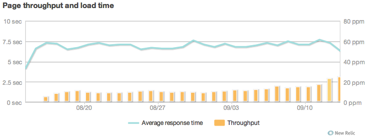
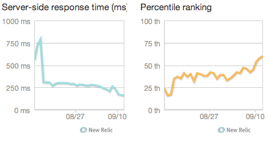
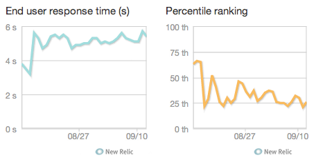
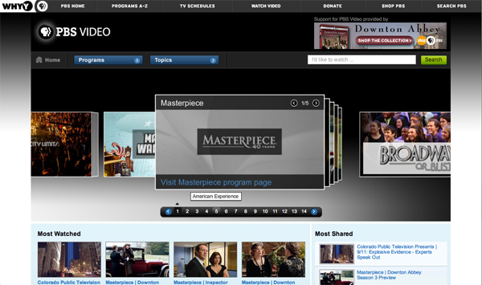

Maximizing Reach with Responsive Design
- Geoff Bishop - Director, Mobile & Emerging Platforms PBS : @gabishop
PBS Mobile State of the Union (August)
- Video Apps for iPhone & iPad (Kids + GA)
- 69M mobile streams per month
- Thats 27% of hours total hours watched (and growing)
- 48% of streams (and growing)
The Problem
- Underserving users on non-iOS platforms
- Lack of resources for multi-platform native strategy
- Saw Responsive Design as a solution
The Reality - User's Entertainment Preferences
- Nearly double prefer Web vs Native (OPA Survey - June '12)
- 60% Prefer Mobile Web (40% native)(MDG & multiple sources - June '12)
- 100% YoY increase in Mobile Web Traffic to PBS Video
Project Goals
- Be the first to offer feature-length video on the mobile web browser
- Serve that video as fast and reliably as Vimeo & Youtube
The Plan
- Convince Org we're just building a "Mobile Website"
- Started with smartphone & tablet-only breakpoints
- Train designers & developers as we go
- Deal with desktop later
Organizational Challenges
- Dev team time-shifted
- "Traditional" design - dev handoff (yay mocks!)
- hand-waiving Product Manager
Last Month - Gradually scaled up traffic

Comparing to Industry - Server

Comparing to Industry - End User

Next stop... be really responsive
re-envision the desktop

Is responsive design right for me?
- Much harder to make an existing project responsive.
- Be prepared to sell it
- A dedicated mobile website could be a better, more efficient solution.
Want more?
- Lots of Tech/Design Sauce - Dome Theatre @ 1pm
- Dave Ackerman - Engineer @ Modus Create - @dmackerman